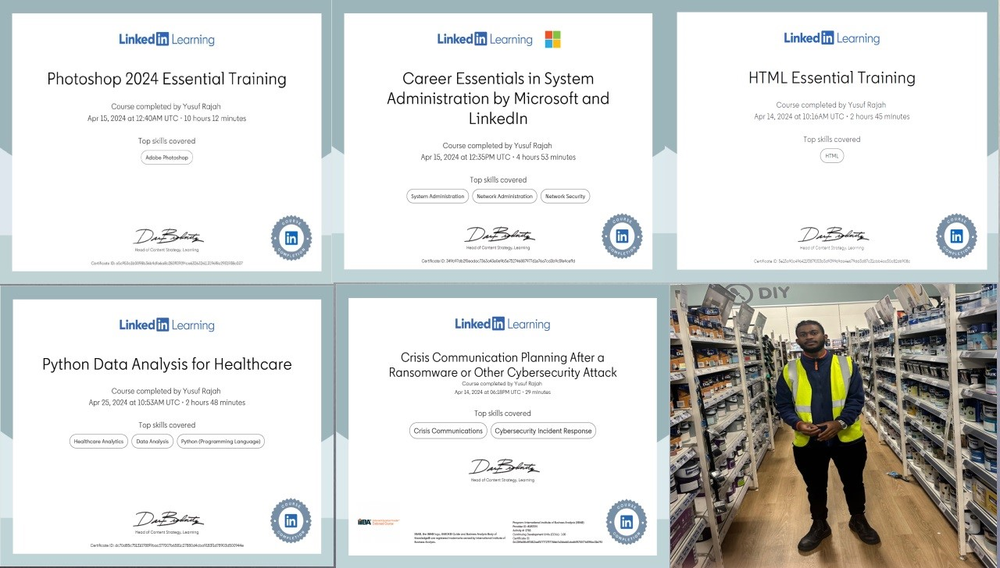
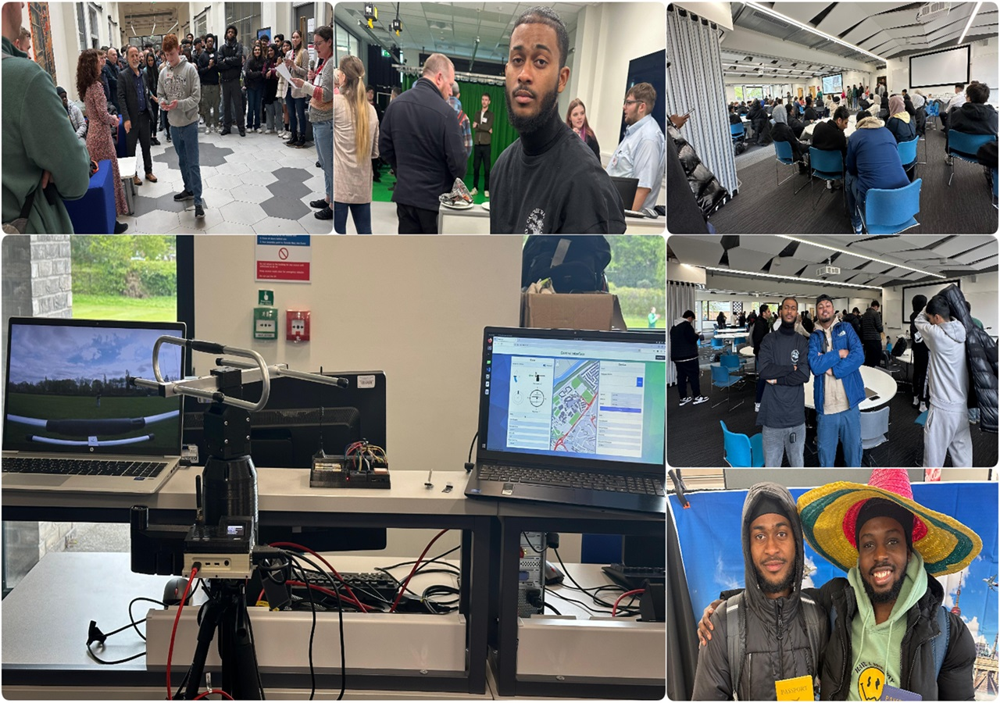

Knowledge and Skills Development
CPD on LinkedIn and Part-Time Work
Photoshop Essential Training
I picked up some pretty cool stuff. First off, I got a good grip on Graphic Design Fundamentals. You know, things like color theory, typography, and composition. It's not just about making things look pretty; these basics are super important for creating awesome user interfaces and graphics in software development. Then, there's Image Editing Skills. I learned how to tweak and edit images using Photoshop tools. It's handy for tasks like fixing up photos, creating logos, or designing UI elements. Lastly, Asset Creation was a big takeaway. Now I can whip up custom graphics and assets for websites, mobile apps, or any other digital project. It's all about adding that extra touch of creativity to my work!Career Essentials in System Administration.
This one was all about getting down to the nitty-gritty of keeping computer systems running smoothly. I got a solid foundation in System Administration Fundamentals. Think operating systems, networks, and server management – the backbone of software systems. Then, there's Troubleshooting and Problem-Solving. I honed my skills in fixing technical glitches and system hiccups, which is crucial for keeping everything ticking along nicely. And of course, Security Best Practices. Learning about security concepts and how to protect system integrity and data confidentiality was eye-opening, especially in today's cybersecurity landscape.HTML Essential Training was a blast!
I dove headfirst into the world of web development. First stop: Web Development Basics. I mastered the essentials of HTML for building the structure and content of web pages. It's like laying the groundwork for creating awesome websites. Then, Semantic Markup was a game-changer. I learned how to use HTML tags effectively to structure content in a way that's accessible, SEO-friendly, and easy to maintain. And Responsive Design was the cherry on top. Understanding how to make websites look good and work seamlessly across different devices and screen sizes really took my web development skills to the next level.Python Data Analysis for Healthcare
It was a bit more specialized but incredibly valuable. I got hands-on with Data Analysis using Python libraries like Pandas, NumPy, and Matplotlib. It's all about crunching numbers and visualizing data, which is super important in healthcare. Then, there's Healthcare Domain Knowledge. I gained insights into the specific data sources, formats, and analysis techniques used in the healthcare industry. And Ethical Considerations was a big focus. Learning about data privacy, confidentiality, and ethical guidelines when dealing with sensitive healthcare data was eye-opening and crucial for staying compliant and trustworthy.Crisis Communication Planning after a Cybersecurity Attack
was a bit intense but incredibly important. I learned how to develop effective crisis communication plans in response to cybersecurity incidents like ransomware attacks. It's all about minimizing damage and getting things back up and running smoothly. Then, Stakeholder Management was a big takeaway. Understanding the importance of clear and timely communication with everyone involved – from employees to customers to regulators – was key for managing expectations and protecting reputation. And last but not least, Continuous Improvement. I realized the importance of analyzing past incidents, gathering feedback, and constantly improving our crisis communication plans to stay one step ahead of future cybersecurity threats.All in all, these courses have been super insightful and have really leveled up my skills and knowledge. Can't wait to put it all into action! By the way, all these certificates are neatly organized and available in one master PDF document. View Master PDF.
The Range, UK (Part-Time Job)
Finally, Working as a retail assistant at The Range while studying computer science offers:CPD on Computer Science Degree Showcase (BSc) 25th April 2023
On April 25th, I had the opportunity to attend a computer science degree showcase, where my friends presented their demo projects. It was an inspiring event filled with innovation and creativity. Through their projects, I learned about a diverse range of topics and technologies, from artificial intelligence and machine learning applications to web development and cybersecurity solutions. Each presentation offered valuable insights into the practical applications of concepts learned throughout our degree program. It was fascinating to see how my peers utilized their skills to tackle real-world problems and create impactful solutions. From interactive websites to sophisticated data analysis tools, the showcase highlighted the breadth and depth of knowledge gained during our studies. Witnessing the culmination of their hard work and dedication was both motivating and enlightening, igniting my own aspirations for future projects and endeavors in the field of computer science.